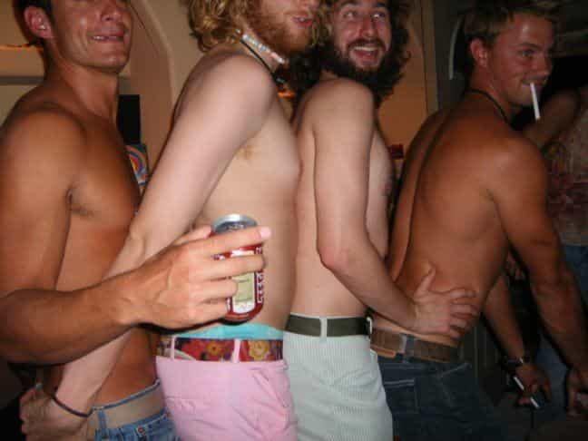

< < < Back
Brandon Bostian’s Amtrak Crash Exposes The Problems With Homosexuals In America – Return Of Kings
Last week, Amtrak engineer Brandon Bostian was responsible for a train derailment near Philadelphia, killing eight people and injuring several others. In the aftermath of the crash, mainstream media outlets attempted to hush up the fact that Bostian was a gay activist and likely an affirmative action hire, as his job prior to Amtrak was as a register jockey for Target. Conservative journalist Charles Johnson was the first to uncover not only Bostian’s identity, but his penchant for plastering dick pics all over the Internet (link NSFW):
After a careful study of his social media we conclude that he is an exhibitionist who is interested in odd sex acts.
We’ve thankfully blocked out the actual dicks because we’re a family friendly website (sort of).
We’re publishing these photos because we believe the public has a right to know and because we think it’s important to always focus on the who of a story rather than whatever policy outcome.
(Of course, nobody would question this material if it came from Gawker or another degenerate site but because its GotNews.com they’ll freak out.)
Johnson’s detractors tried to argue that Bostian’s homosexuality and exhibitionism had nothing to do with the crash, but the reality is that character traits don’t exist in a vacuum. How someone acts in their private life sheds light on how they’ll behave on the job, a fact that leftists have twisted in order to sic lynch mobs on anyone whom they deem “racist,” “sexist” or “homophobic.” It’s not a stretch to argue that a man obsessed with showing off his private parts to strangers might also be inclined to show off how fast he can drive a runaway train.
For the past twenty years, the left has pushed acceptance for gays and gay marriage on the basis that homosexuals are just like you and me, the only difference being who they’re attracted to. While I don’t care what people do in their private lives, this reductionist line ignores widespread dysfunction among homosexuals. Indeed, because the left has so effectively hidden the dark side of gay culture from view, homosexuals are becoming a major threat to public health and safety.
The Gays Are Very Different From You And Me

The most obvious problem with homosexual men is that they’re walking disease vectors. It’s common knowledge that the HIV epidemic is driven by homosexual men; according to the CDC, gay and bisexual men account for 61% of all HIV infections in the U.S. despite comprising only two percent of the population. HIV continues to persist in the West because the sexual habits of gay men make the most degenerate straights look like chaste church-goers in comparison:
Prior to the AIDS epidemic, a 1978 study found that 75 percent of white, gay males claimed to have had more than 100 lifetime male sex partners: 15 percent claimed 100-249 sex partners; 17 percent claimed 250-499; 15 percent claimed 500- 999; and 28 percent claimed more than 1,000 lifetime male sex partners. Levels of promiscuity subsequently declined, but some observers are concerned that promiscuity is again approaching the levels of the 1970s. The medical consequence of this promiscuity is that gays have a greatly increased likelihood of contracting HIV/AIDS, syphilis and other STDs.
Despite the fact that their promiscuous lifestyles are literally halving their lifespans, homosexual men are incapable of putting the brakes on their hedonism. For example, according to this New York magazine article from last summer, gay men have reacted to the new anti-HIV drug Truvada by resuming their barebacking ways. That’s like a fat chick continuing to shove her face with Twinkies after getting her stomach stapled:
When Adam and I met up, he’d taken his first dose of Truvada the day before. He felt fatigued, but he’d also underslept, so he wasn’t sure it was the drug. The night before, he’d invited over a regular hookup who has told him he’s HIV-negative. “I had wanted him to cum in my mouth,” Adam says, “but I knew that the PrEP doesn’t take full effect for seven days.”
To make matters worse, HIV retrovirals are heavily subsidized by Western governments. A 2000 report showed that the Australian government was spending roughly $10,500 AUS per patient for HIV retrovirals, and could possibly be spending over $3 billion AUS ($2.5 billion USD) on Truvada alone now. Effectively, your tax dollars are being spent on allowing gays to have unprotected sex with truckloads of men.
Also note the stunning lack of propriety in the above passage. This guy is so shameless about his sleeping around that he has no problem telling a complete stranger that he wanted another man to “cum in [his] mouth.” Lack of propriety and proper boundaries seems to be common among homosexuals, as this news article about the children of gay couples (and why they oppose gay marriage) shows:
Dawn Stefanowicz said her gay father was so preoccupied with sex that when she was in high school and brought home a male classmate, both her father and his lover propositioned him for sex.
Imagine a straight man hitting on his son’s girlfriend. You can’t, because even a single father wouldn’t think about violating his son’s boundaries in that fashion. This is how many homosexuals act: they’re narcissists who can’t be bothered to integrate into society yet constantly demand that straight people approve of their life choices.
It gets even worse. Gay marriage, typically framed as a matter of “love,” can easily be used to enable homosexual child molesters. For example, in 2013, gay couple Mark J. Newton and Peter Truong were convicted of child sexual abuse after they had a son via artificial insemination, then used him as their personal sex toy:
Police believe the pair had adopted the boy ‘‘for the sole purpose of exploitation’’. The abuse began just days after his birth and over six years the couple travelled the world, offering him up for sex with at least eight men, recording the abuse and uploading the footage to an international syndicate known as the Boy Lovers Network.
Before their crimes were discovered, Newton and Truong were the focus of an ABC (Australian Broadcasting Company) puff piece on gay adoption. The article has since been deleted from the ABC website, but a copy of it is archived here. There are likely more gay abusers like Newton adopting children for the sole purpose of raping them, but their stories are being suppressed by the media for obvious reasons.
While not as problematic as gay men, homosexual women have their own set of pathologies. In a recent article for Breitbart, Milo Yiannopoulos revealed that contra to feminist propaganda, the lion’s share of domestic violence in Western countries is committed in lesbian relationships:
The Huffington Post reported in 2014 that 50 percent of lesbian women experience one of these Sapphic skirmishes at some point in their lives. Yet it wasn’t until 2002 that researchers bothered to look into the scale and character of lesbian domestics and understanding of the phenomenon has not increased dramatically, even among lesbians themselves.
According to the CDC, a whopping 75 percent of bisexual women claim to be victims of sexual violence, likely because they’re exposed to both violent men and women.
Tolerance Of The Intolerable Is Not A Virtue

It’s tempting for men who are more clued-in to the nature of the sexes to argue that gay men act the way they do because they’re men, not because they’re gay. This ignores the fact that homosexuals exhibit behaviors and pathologies that are almost nonexistent in the straight population, from anonymous sex (rare among heterosexuals), to exhibitionist sex (in Brandon Bostian’s case), to higher rates of mental illness in general, to freakish paraphilias like this (link not safe for work, or your mental health).
The leftist tactic of smearing critics of homosexual degeneracy as “homophobic” is completely off-base. We aren’t “afraid” of homo misbehavior, we’re disgusted by it, same as if we’d stepped in a dog turd on the sidewalk. There is nothing wrong with being revolted by people who spread disease through reckless sex, who adopt children so they can abuse them sexually, and who think shoving a taser up a mummy’s ass makes for a fun Friday night.
While I have no issue with people doing what they want in the privacy of their homes, homo dysfunction—and the left’s inability to acknowledge it—is hurting society at large. Homosexual men are spreading disease through their wanton barebacking and other paraphilias, while lesbians are disproportionately battering women. If gays truly want straights to tolerate them, they need to rein in their misbehavior and stop acting like we’re the bad guys for pointing it out.
At the end of the day, heterosexuality is the future of mankind. Homosexuality is just a hobby.
Read More: How To Get Laid On Amtrak Trains